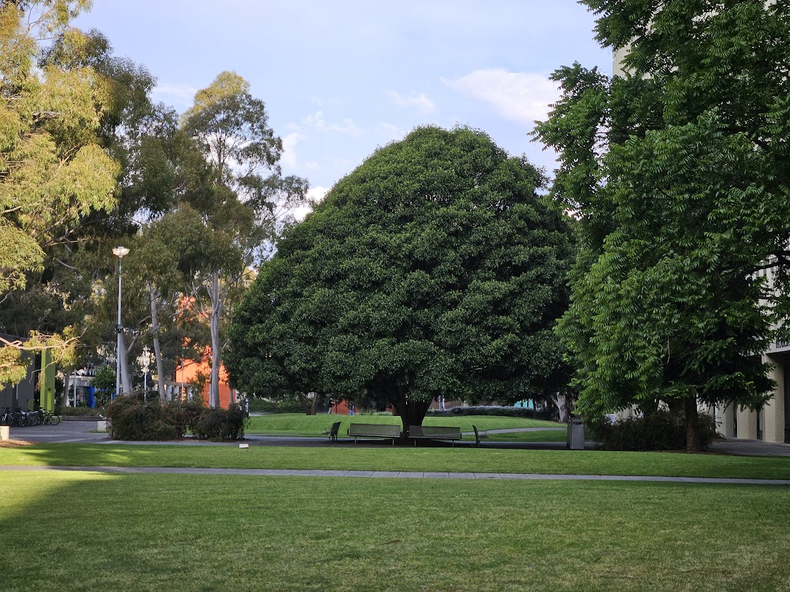

Email: ariansultan94@gmail.com
LinkedIn: Connect with me
Resume: Download Here
Specialising in statistical modeling, predictive analytics, and data-driven insights. Let's collaborate to turn data into actionable forecasts!
Learn More Contact MeI have a Bachelor’s degree in Economics and Management from the University of London and a Master’s degree in Business Analytics from Monash University. Over the years, I’ve focused on using tools like R, Python, Excel, and Power BI to work with data, uncover trends, and make sense of complex information. My experience includes building statistical models and creating forecasts that are both practical and easy to understand.
I believe the true value of data lies in how it’s communicated, so I always aim to present insights in the simplest and clearest way possible. I’m particularly interested in statistical forecasting and enjoy exploring patterns in data to help solve real-world problems.
I host the Forecasting Impact Podcast, exploring forecasting applications across industry and academia. I also infrequently write blog posts that can be found here.

Developed monthly turnover forecasts for pharmaceutical industries using ETS and ARIMA models in R.
Created a Shiny app to optimise bed allocation in stroke units through discrete event simulation modeling.